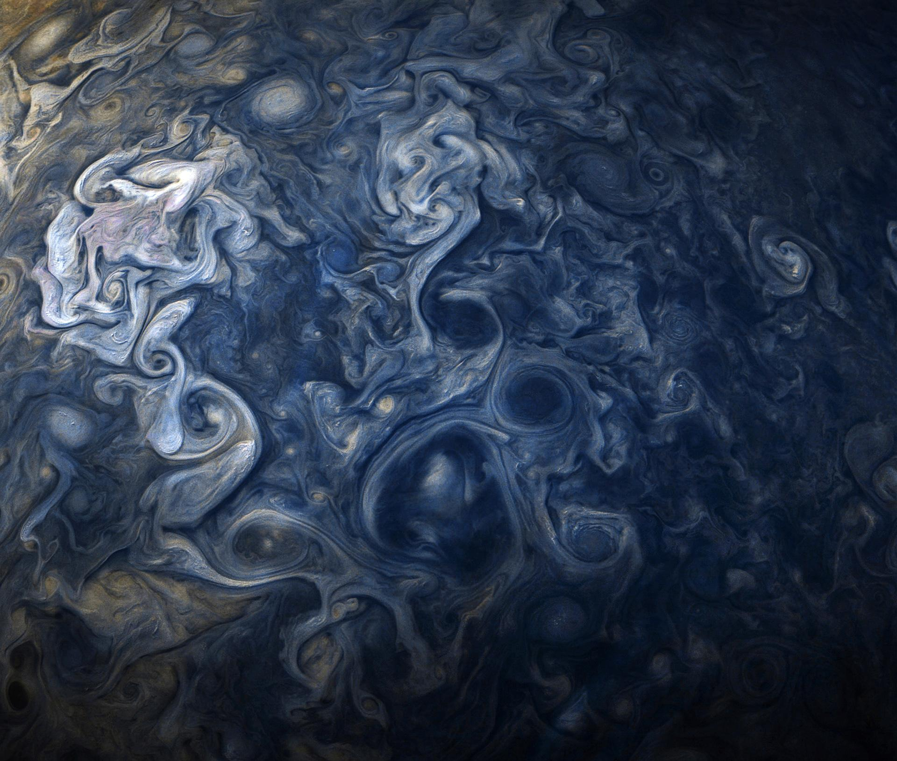
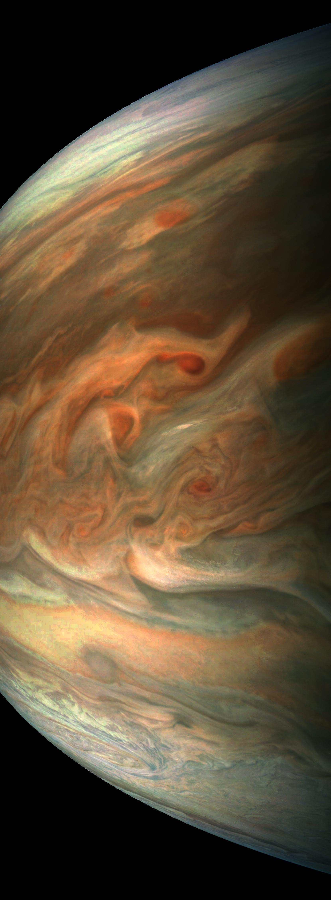
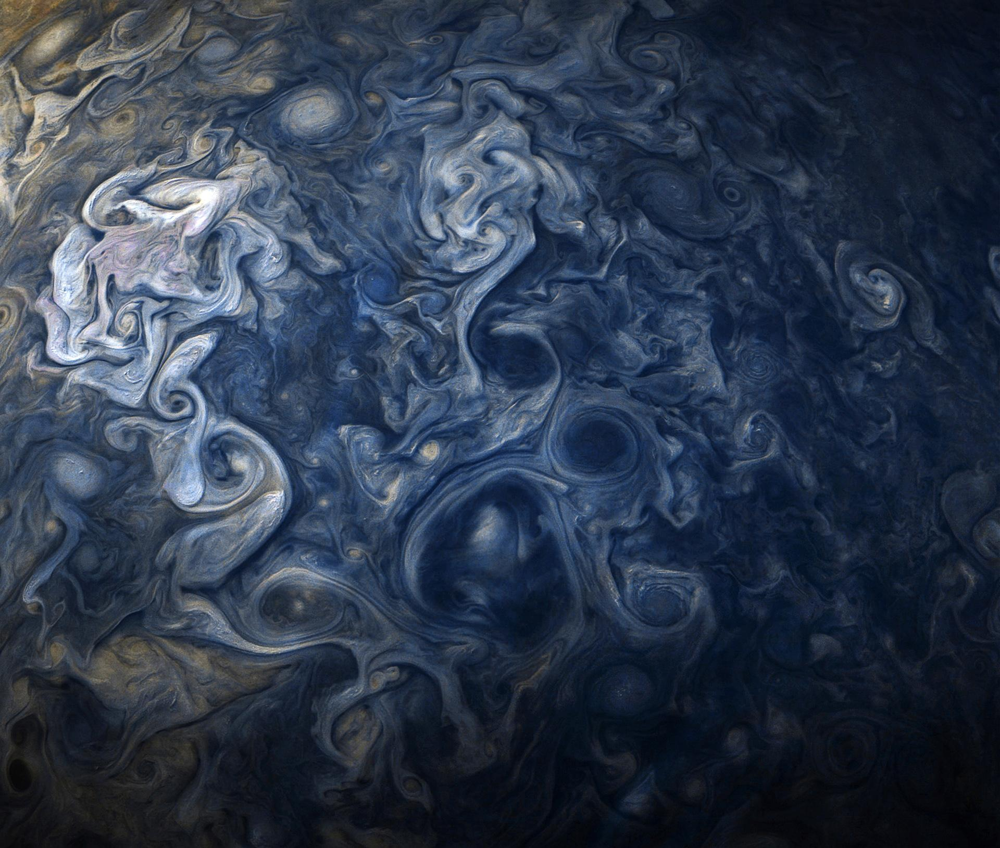
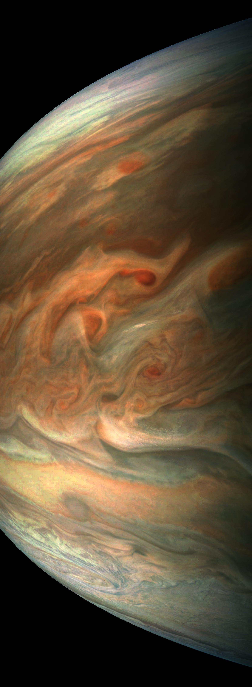

Ogólne informacje
Jowisz to ogromna planeta zbudowana z gazów przez co często nazywana jest "gazowym gigantem". Jego rozmiar to około 1/1000 masy Słońca. Jego promień wynosi 69911km. 1 orbita wokół słońca zajmuje Jowiszowi 12 Ziemskich lat a obrót wokół własnej osi jedynie 10 Ziemskich godzin. Jowisz jest większy niż niektóre gwiazdy.Znaczenie dla Ziemi
Jowisz swoją grawitacja ściąga na siebie wiele niebezpiecznych asteroid które mogłyby zniszczyć życie na Ziemi. 


